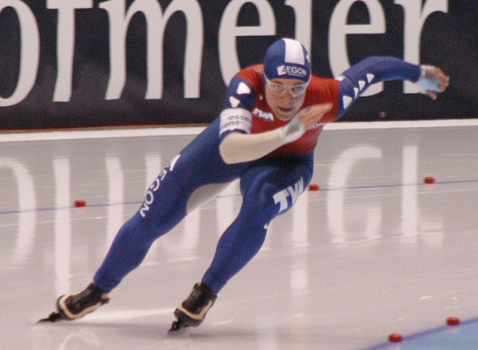

Speed skating is a competitive form of ice skating in which the competitors race each other in travelling a certain distance on skates. Types of speed skating are long track speed skating, short track speed skating, and marathon speed skating. In the Olympic Games, long-track speed skating is usually referred to as just "speed skating", while short-track speed skating is known as "short track".[1] The ISU, the governing body of both ice sports, refers to long track as "speed skating" and short track as "short track skating".
Long track speed skating in Thialf in 2008
The standard rink for long track is 400 meters long, but tracks of 200, 250 and 333⅓ meters are used occasionally. It is one of two Olympic forms of the sport and the one with the longer history. An international federation was founded in 1892, the first for any winter sport. The sport enjoys large popularity in the Netherlands and Norway. There are top international rinks in a number of other countries, including Canada, the United States, Germany, Italy, Japan, South Korea, Russia and Kazakhstan. A World Cup circuit is held with events in those countries and with two events in Thialf, the ice hall in Heerenveen, Netherlands.
